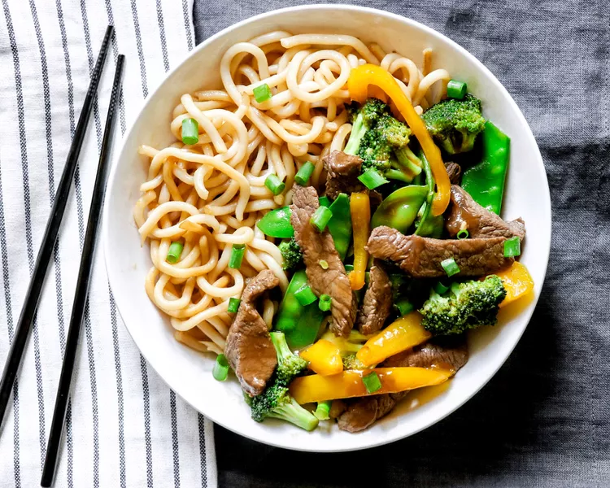

Teriyaki Beef Stir-Fry

Description
As the name implies, this teriyaki beef and vegetable stir fry is easy to make and done in under 30 minutes
Tasty and perfect for a night when you need dinner in a hurry.
We like to use top sirloiin for stir fry recipes since it stays so juicy. Serve with rice or noodles
Ingredients
- 3/4 water
- 3 tablespoons soy sauce
- 3 tablespoons packed brown sugar
- 1 1/2 tablespoons cornstarch
- 1 tablespoon honey
- 1/4 teaspoon ground ginger
- 2 tablespoons sesame opil, divided
- 1 pound beef sirloin steak, cut into strips
- 1 small head broccoli, broken into florets
- 6 ounces snow peas
- 1 medium yellow bell pepper, cut into strips
- 2 cloves garlic, minced
- 2 tablespoons chopped green onions
Steps
- Whisk water, soysauce, brown sugar, cornstarch, honey, and ginger together in a bowl until well combined
- Heat 1 tablespoon sesame oil in a large wok or skillet over medium high heat. Add stead and cook and stir until browned, about 4 minutes.
Move steak to the side of the wok. Add remaining tablespoon sesame oil to the center of the wok, followed by broccoli, snow peas, bell pepper, and garlic.
Cook, stirring the vegetables, for 2 minutes.
- Add reserved sauce to the wok and stir everything together. Bring to boil and cook until the sauce thickens and the vegetables are crisp-tender, about 2 minutes
- Garnish with chopped green onions.